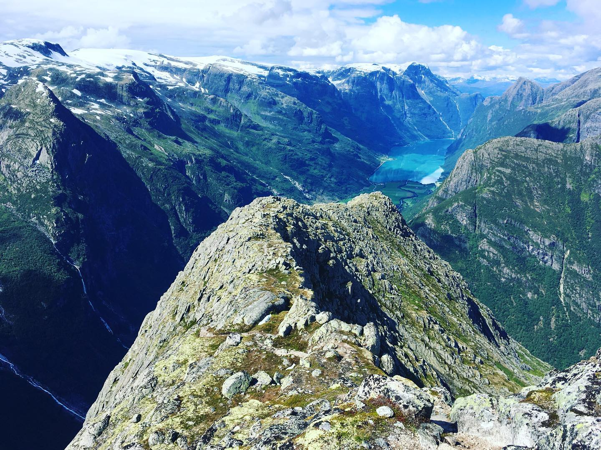
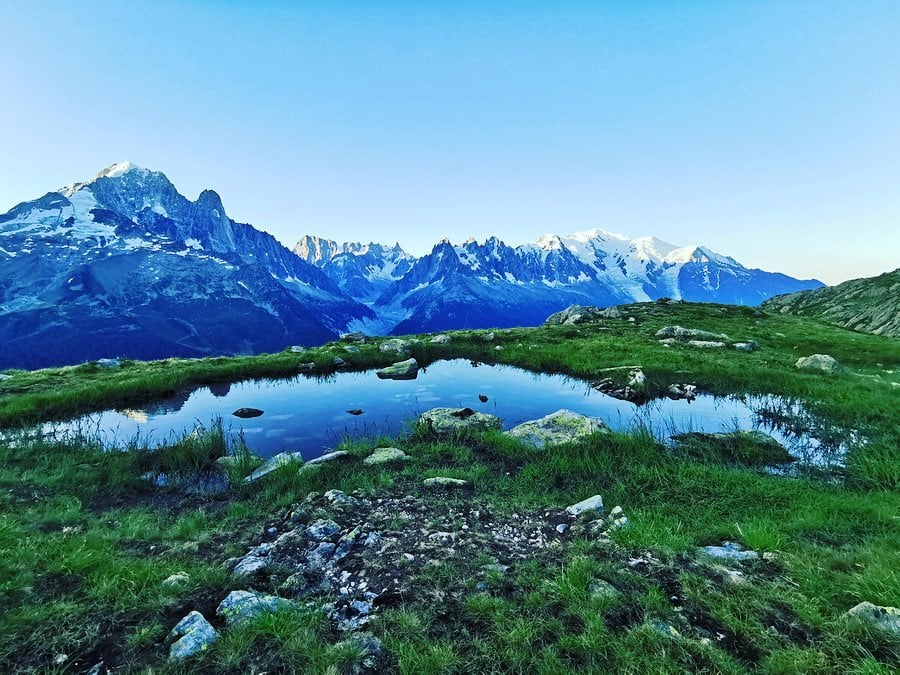

Z mých cest
Švýcarsko

Eiger je nejvýchodnějším vrcholem horského masivu Jungfrau v bernském regionu Švýcarských Alp. Jeho výška je 3970 metrů nad mořem. Dalšími známými vrcholy tohoto masívu jsou Jungfrau (v překladu Panna) a Mönch (v překladu Mnich). Jméno hory má kořeny ve středověké vulgární latině a odkazuje buď na špičatý vrchol nebo na bájného obra.
Základní stavební horninou Eigeru je vápenec, pocházející převážně z druhohor. Ty se strmě zdvihají na severní hraně masivu Aar, který byl vyzdvižen těmito sedimenty od jižního k severovýchodnímu Eigerjochu a je považován za geologickou zvláštnost.
Nejvýše položená železniční stanice v Evropě (3454 m n. m.) se nachází v sedle mezi štíty Mönch a Jungfrau. Vlak projíždí tunelem vybudovaným v hoře Eiger, kde se stáčí a vynořuje se v sedle Jungfraujoch. Uvnitř hory je umístěna železniční stanice Eigerwand, odkud je možné nahlédnout do severní stěny.
Norsko
Norsko, plným názvem Norské království, je jedním ze severských států na Skandinávském poloostrově v severní Evropě. Má rozlohu 385 207 km² a žije v něm 5 300 000 osob. Hlavním městem je Oslo. Norsko je unitární stát a parlamentní monarchie. Sousedí se Švédskem na většině jihovýchodní hranice, s Finskem a Ruskem na severovýchodě. Pod norskou suverenitu patří rovněž arktické souostroví Svalbard (Špicberky) a ostrov Jan Mayen, jež leží nedaleko Islandu. Administrativně dosud patří Norsku také ostrov Bouvetøya v jižním Atlantiku. Země si činí nárok i na Ostrov Petra I. v jižním Pacifiku a teritorium Země královny Maud (Dronning Maud Land) v Antarktidě.
Norsko je převážně hornatá země, nejvyšší hora Galdhøpiggen měří 2 469 metrů. V její blízkosti také leží dva norské ledovce Jostedalsbreen a Jotunheimen, lákající každý rok tisíce turistů. Na mezinárodní silnici E16, spojující Oslo s Bergenem na západním pobřeží Norska, se nachází nejdelší silniční tunel na světě (Lærdalský tunel, 24,5 km dlouhý).
Norsko vytvořilo severský model sociálního státu. Norský stát rovněž udržuje své vlastnictví v klíčových průmyslových odvětvích, jako je těžba ropy a zemního plynu. Ropný průmysl představuje zhruba čtvrtinu hrubého domácího produktu (HDP).[5] Norsko je patnáctým největším světovým producentem ropy na světě.[6] V přepočtu na jednoho obyvatele je největším těžařem ropy mimo Blízký východ.
Francie-Chamonix
Chamonix-Mont-Blanc je město ve východní Francii v départementu Horní Savojsko na úpatí masivu Mont Blancu. Údolí Chamonix sleduje směr od severovýchodu k jihozápadu; protéká je řeka Arve, do níž se vlévá bystřina l'Arveyron pramenící těsně nad Chamonix v ledovcovém poli Mer de Glace. Údolí je sevřeno z jihovýchodní strany masivem Mont Blancu s vrcholem v nadmořské výšce 4808 m pokrytým sněhem a ze severozápadní strany méně impozantním strmým hřebenem s vrcholy Le Brévent (2525 m n. m.) a Aiguilles Rouges.
Administrativně k Chamonix náleží řada vesnic a osad roztroušených v údolí, jako např. „Les Bossons“ (1012 m n. m.), „Les Praz“ (1060 m n. m.), Argenti`ere (1252 m n. m.) a Le Tour (1462 m n. m.) Sedlem Col de Montets (1461 m n. m.) vede silnice směrem ke švýcarskému Martigny ležícímu v údolí řeky Rhône.